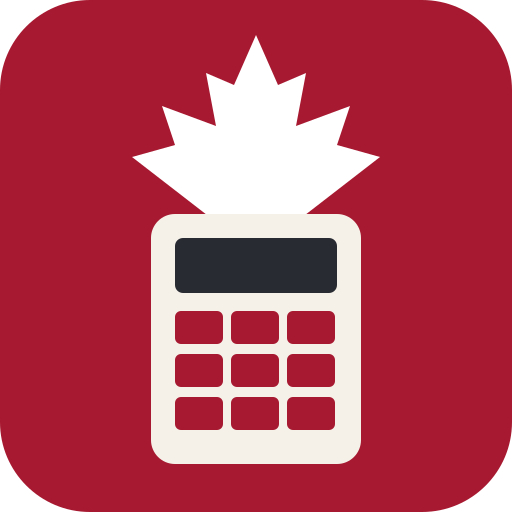

حاسبات كندا
حاسبات كندا · V4.3احسب ضريبة المشتريات وراتبك الصافي بسرعة.
الإعفاءات ليست تلقائية. تحقق من أهلية المنتج؛ البقشيش اختياري ويحسب قبل الضريبة.
أداة تقديرية للمعلومات العامة وليست استشارة ضريبية. تأكد من النسب من المصادر الرسمية قبل الاعتماد عليها.
الإصدار 4.3 — الرواتب 2026 و2027. آخر تحديث: 26 نوفمبر 2026. لا تحديث تلقائي للنسب. تخفيضات المعالين لعام 2027 غير مؤكدة ولذلك عطلت لهذه السنة.
المصادر الرسمية
وكالة الإيرادات الكندية – T4127 (2026) · وكالة الإيرادات الكندية – T4127 (2027) · تخفيض ضريبة أونتاريو · حاسبة اقتطاعات الرواتب الكندية · وكالة الإيرادات الكندية – GST/HST
سياسة الخصوصية
الحسابات تتم داخل جهازك. لا يرسل التطبيق مدخلاتك المالية ولا يحفظها عمدا. يخزن المتصفح ملفات التطبيق للعمل دون اتصال. قد يسجل مزود الاستضافة بيانات الاتصال المعتادة مثل عنوان IP. الروابط الخارجية تخضع لسياسات أصحابها.
إخلاء المسؤولية
هذه أداة تعليمية مستقلة وليست تابعة للحكومة الكندية ولا تقدم استشارة مالية أو ضريبية. النتائج تقديرية ولا تصلح بديلا عن كشوف الرواتب أو الإقرار الضريبي أو حاسبة CRA الرسمية. قد تتغير القوانين والنسب.
لا تدرج راتبك الحقيقي أو معلوماتك الشخصية في البلاغ العام. يتطلب GitHub حسابا وقد يلزم تفعيل قسم Issues.
تثبيت التطبيق
على iPhone استخدم Safari ثم مشاركة ثم إضافة إلى الشاشة الرئيسية. على Android استخدم قائمة المتصفح ثم تثبيت التطبيق إن توفر.
© 2026 حاسبات كندا